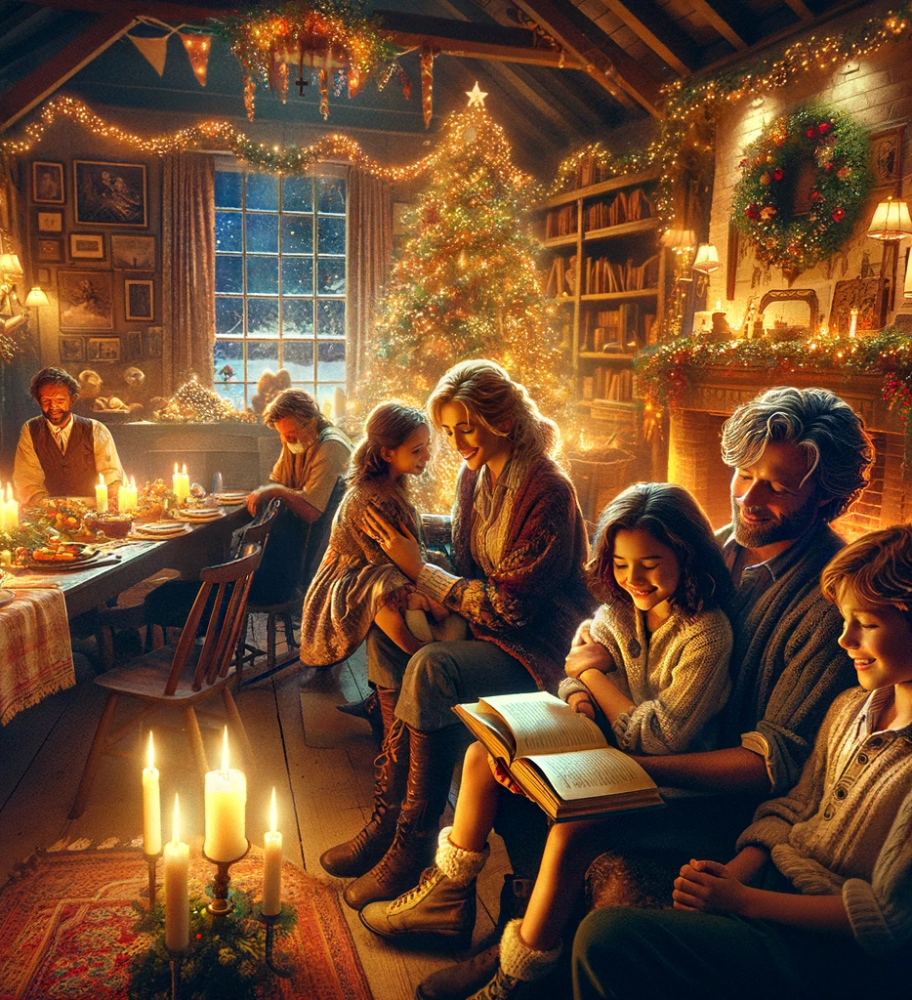

24. Dezember
Ein Weihnachtsfest
 Die Rückfahrt nach Rom war ausgelassen. Das Zugabteil war erfüllt von Gelächter und Stimmengewirr. Thea und Johann saßen zusammen und tauschten ihre Erlebnisse aus, während Maggy neben Carlos saß und begeistert von Johann als „Superhelden“ erzählte. Hans warf immer wieder grinsende Blicke in die Runde. „Und dann hast du einfach alle Wachen eingefroren?“ Thea sah Johann mit großen Augen an.„Ich weiß auch nicht genau, wie das passiert ist“, gab Johann zu. „Es fühlte sich an, als wäre ich plötzlich ganz ruhig geworden, obwohl alles um mich herum total chaotisch war.“
„Magisch“, flüsterte Maggy bedeutungsvoll, und alle lachten.
Die Müdigkeit, die nach dem Adrenalinstoß des Abenteuers allmählich einsetzte, wich einer stillen Erleichterung, als sie in Rom ankamen. Die Stadt war festlich beleuchtet, und ein Hauch von Weihnachten lag in der kalten Luft.
Eine herzerwärmende Wiedervereinigung
Am Haus von Hans und Maggy wartete die nächste Überraschung: Johanns Eltern standen vor der Tür, die Arme weit geöffnet. Sie hatten es nicht übers Herz gebracht, ohne ihren Sohn nach Lissabon zurückzukehren. Stattdessen hatten sie in Rom auf ihn gewartet, informiert durch Carlos, der sie über jeden Fortschritt auf dem Laufenden gehalten hatte.
„Mama! Papa!“ Johann stürzte sich in die Arme seiner Mutter, die ihn fest umschlang und kaum fassen konnte, dass er wirklich wohlbehalten zurück war. Sein Vater hielt ihn fest an den Schultern und sah ihm mit glänzenden Augen in die verwuschelten Haare.
„Du bist unser Held, Johann“, sagte er. „Aber bitte, Junge, lass uns nie wieder so eine Angst durchmachen.“
Auch Carlos, Hans und Maggy wurden herzlich begrüßt und gelobt. „Ihr habt unseren Sohn beschützt und zurückgebracht“, sagte Johanns Vater ernst. „Wir sind euch unendlich dankbar.“
Erzählungen und Erkenntnisse
In den Tagen vor Weihnachten wurde das Abenteuer oft besprochen. Johann las in der Zeitung, dass die Polizei den gefährlichen Sektenring zerschlagen hatte. Dank ihrer Hinweise waren alle Mitglieder verhaftet worden, und die beiden Kinder, Karim und Shi-Xu, waren inzwischen sicher auf dem Weg nach Hause.
Am Abend erzählte Thea, wie sie entführt worden war. „Es war schrecklich“, gestand sie. „Ich hatte solche Angst. Aber ich wusste immer, dass mein Papa mich finden würde.“
Carlos hörte zu und nickte, während er erklärte, wie er sich langsam auf die Spur der Entführer gesetzt hatte. „Es war ein Puzzlespiel“, sagte er. „Aber ich hätte alles getan, um Thea zu retten.“
Johann wurde von allen gelobt, was ihn gleichermaßen stolz und verlegen machte. Maggy nannte ihn mit einem Augenzwinkern „den großen Helden“, und sogar Hans stieß ein leises „Gut gemacht, Junge“ aus.
Ein festliches Weihnachtsfest
Als Weihnachten kam, war das Haus von Hans und Maggy erfüllt von Wärme und Freude. Johanns Eltern hatten Geschenke für alle mitgebracht: eine wunderschöne Halskette für Thea, ein Notizbuch für Maggy und eine antike Karte für Carlos, die er begeistert studierte. Johann erhielt ein Buch über griechische Mythologie, das ihn sofort fesselte.
Der Höhepunkt war jedoch das festliche Weihnachtsessen. Der Tisch war mit traditionellen italienischen Speisen gedeckt: dampfende Lasagne, duftende Brote, aromatische Soßen und ein gigantischer Panettone. Lachen und fröhliche Stimmen erfüllten den Raum, während die Familie und Freunde gemeinsam feierten.
Am Abend saßen sie zusammen vor dem Kamin. Thea lehnte sich an ihren Vater, und Johann hielt sein Buch fest umklammert. Er dachte an die Götter und Wesen, die er gesehen hatte. Waren sie wie die griechischen Götter? Waren sie genauso fehlbar und menschlich, oder war ihre Welt ganz anders?
„Johann“, unterbrach Carlos seine Gedanken, „wie fühlst du dich jetzt mit deiner Rolle als Auserwählter?“
Johann überlegte einen Moment und lächelte dann. „Mir reicht das Abenteuer“, sagte er ehrlich. „Es war schön, weil ich einen Onkel gewonnen habe und neue Freunde in Italien. Aber ich bin froh, wenn ich einfach wieder ein normaler Junge sein kann.“
„Und deine Fähigkeiten?“ fragte Carlos.
„Ich hoffe, die verschwinden nach der Adventszeit wieder“, antwortete Johann. „Aber wer weiß? Vielleicht sind sie ja irgendwann mal nützlich.“
Der Abschied
Nach den Feiertagen kam der Abschied. Johann und seine Eltern machten sich auf den Weg zurück nach Lissabon, während Carlos und Thea nach Chile reisten. Alle nahmen sich fest vor, sich im nächsten Jahr wieder zu Weihnachten zu treffen.
Als der Zug durch die winterliche Landschaft fuhr, öffnete Johann sein neues Buch. Er las von Zeus, Hera, Poseidon und all den anderen und konnte nicht aufhören, an die Wesen zu denken, die er selbst gesehen hatte.
War sein Abenteuer wirklich vorbei? Er wusste es nicht genau. Aber in diesem Moment war er einfach nur glücklich, bei seiner Familie zu sein und ein wenig Normalität zurückzuerlangen.
So endete Johanns außergewöhnliches Abenteuer – mit einem Herzen voller Erinnerungen, neuen Freundschaften und einem Funken Magie, der ihn für immer begleiten würde.